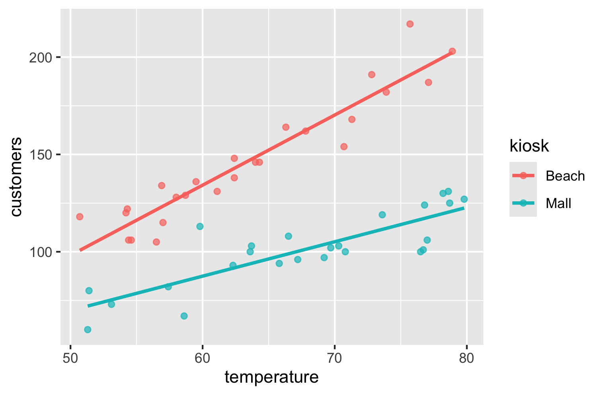
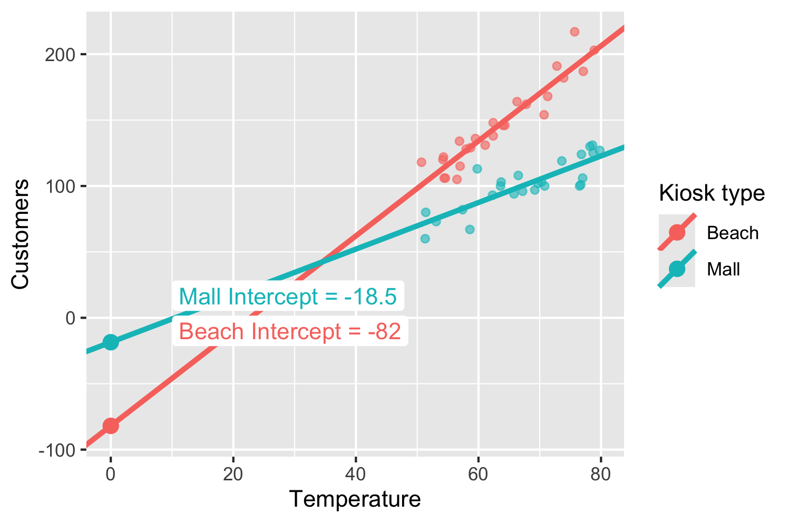
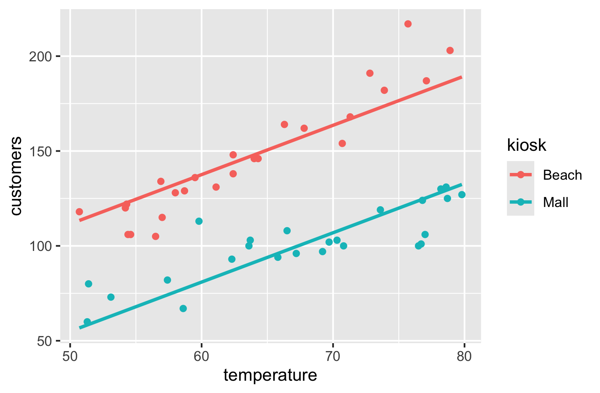

kiosk_beach_mall_temp |>
summarize(avg_customers = mean(customers),
.by = kiosk)12 Amanda’s New Challenge
In prior chapters we have looked at three different situations in the specific context of Amanda’s kiosks. Table 12.1 shows the scenarios and the models we found for each.
| Response variable | Explanatory var | Best model |
|---|---|---|
| Num customers, one for both kiosks | None | Mean customers |
| Num customers, one per kiosk | Kiosk location | Mean for each kiosk |
| Number of customers | Temperature | Least squares line |
Table 12.2 summarizes the situations in more generic terms than the specific kiosk context and the best model for each. (Recall that in this book we consider only numerical response variables.)
| Response variable type | Explanatory variable type | Best model |
|---|---|---|
| Numerical | None | Mean |
| Numerical | Categorical | Category means |
| Numerical | Numerical | Least squares line |
In our running story, this is the fourth meeting of our interns with Amanda. Amanda owns a business that operates kiosks in a city at two locations.
“Team, our beach kiosk performed really well last month. Using the temperature to estimate the number of customers really helped us stay efficient. We hit our lowest food waste thus far, and, compared to prior months, we did not run out of stock by a lot either. Your models are helping.”
The interns feel very happy to hear this.
Amanda continues. “I now have more data and have reason to believe that the number of customers who turn up at the mall kiosk also seems to be related to the temperature, but not quite in the same way as the beach kiosk. I am not able to put my finger on it, but something tells me that we can do better with a model that considers both temperature and the kiosk location.”
She then showed her data on the screen (data frame kiosk_beach_mall_temp).
She reiterates her earlier constraint:
“Keep it simple. I need something simple that I can entrust my workers with to execute without risk of error amidst their hectic workload.”
She emails the team the data file and heads out. While exuding confidence externally, internally she has a nagging doubt that she might be stretching these undergrads too much. But she decides that it is better to stretch a bit and give them room to discover their potential rather than giving them an easy time and leaving them unprepared for the real world once they graduate.
Her confidence energizes the team and they all think through this in silence for a few minutes.
Suzie is the first to speak up. “Using this data, our one number per kiosk, model will look like this.” and she writes out the code to compute the averages for the two kiosks separately.
Based on the averages, she then writes out Equation 12.1.
\[ \widehat{\text{customers}} = \begin{cases} 101 & \text{if } \text{kiosk} = \text{"Mall"} \\ 146 & \text{if } \text{kiosk} = \text{"Beach"} \end{cases} \tag{12.1}\]
With the new data, if we estimate the number of customers based on temperature alone, our model becomes this” and she writes out the code and Equation 12.2.
kiosk_beach_mall_temp |>
model_train(customers ~ temperature) |>
coef()(Intercept) temperature
8.35 1.76 \[ \widehat{\text{customers}} = 8.35 + 1.76\,\text{temperature} \tag{12.2}\]
“How do we continue from here?”
Everyone sat back, looking intently at the two simple equations.
Then David spoke up. “Can we think of some combination of the two? In the case of the temperature model, we had a general model like this in which we found the best values for a and b.” and he writes out Equation 12.3.
\[ \widehat{\text{customers}} = a + b\,\text{temperature} \tag{12.3}\]
David then continues: “Why not just add another variable c to this?” And he wrote out Equation 12.4
\[ \widehat{\text{customers}} = a + b\,\text{temperature} + c\,\text{kiosk\_location} \tag{12.4}\]
“Now we just have to find the best values for a, b, and c. That’s all!”
“Terrific!” Angela says. “Looks like we are done!” People nod in agreement.
“Hold on” Igor says, and everyone seems mildly irritated, like he is a party pooper.
But, Igor continues “Kiosk location is either Beach or Mall. It is categorical. How do we multiply that by the value of c? I mean, what is Beach times 1.5 or some such?”
They fall into a deep silence again. Angela says “Amanda sure us gave a tough nut to crack.””
Suzie once again tries to connect the old model to the new one. She says “Igor is right in that we cannot multiply c by the kiosk location. But can we not do something like we did earlier with, if the kiosk is beach then something, otherwise something else sort of approach?” and she points to Equation 12.1.
Long silence once again. Then Igor speaks out. “Perhaps our model should look something like this.”
\[ \widehat{\text{customers}} = a + b\,\text{temperature} + \begin{cases} c_{\text{Mall}} & \text{if } \text{kiosk}=\text{"Mall"} \\ c_{\text{Beach}} & \text{if } \text{kiosk}=\text{"Beach"} \end{cases} \]
Time is running out. Amanda would be back any time now.
David speaks up finally “Peter, can you simply extend the earlier temperature model by just tagging on kiosk and see what hapepns? Why not just try? Perhaps it can already do what we want.”
Just then Amanda comes back. The team is quite embarrassed that, unlike on earlier occasions, when they were ready with a solution when Amanda returned, now they do not have a solution. She senses the mood in the room and says “It looks like you have worked hard, but have not hit upon any solution yet.”
Peter replies “We have made some progress, but are not quite there yet. Can you give us a little more time?” He then describes out exactly where they stand and their idea of somehow combining the category mean model with the temperature model.
Amanda senses their disappointment and immediately says: “You seem to be on a good path here. I have a sense that you can pull this off. Let us meet in a few days. Good luck!”
Over the next day, some read up on statistics. Others are all over AI chatbots, and Igor consults his professor.
They meet briefly over coffee in the university cafeteria and agree to meet as a team later that day to see where they stood.
At the meeting, Peter starts “We were on the right track.”
Igor agrees. I spoke to Dr. Berlisky from the statistics department and I have bad and good news. He said that this problem actually involves a somewhat more advanced concept called interactions effects. That is the bad news.
And here is the good news, he suggested a simple idea. Just separate the data for thw two kiosks and build separate models for each based on temperature alone! I wonder why we did not think of that. We will have a separate model for each kiosk. That could be more complex than Amanda might like. But from what the prof said, I think we have no choice. In any case, he said that even if we built a fancy model with interaction effects, we would get the exact same results, but could build the model in a single step.”
The team agreed. This is what they would propose to Amanda.
Peter writes up some code once again to first visualize both models (Figure 12.1).

David looks at Figure 12.1 and says “Amanda’s instinct that the two kiosks relate quite differently seems correct. The beach kiosk seems somewhat more sensitive to temperature. Per degree increase in temperature, it gets more incremental customers.”
Steve says “Yeah. At lower temperatures the differences in the number of customers between the beach kiosk and the mall kiosk are smaller, but when it gets warmer, more people seem to want to hit the beach than the mall. Makes perfect sense to me!”
The team feels happy that they can explain the common sense behind the model.
Peter then writes the code to get separate models for the two kiosks. First for the Mall kiosk.
kiosk_beach_mall_temp |>
filter(kiosk == "Mall") |>
model_train(customers ~ temperature) |>
coef()From the output, they reconstructed the model for the Mall kiosk as:
\[ \widehat{\text{customers}} = -18.53 + 1.77\,\text{temperature} \tag{12.5}\]
kiosk_beach_mall_temp |>
filter(kiosk == "Beach") |>
model_train(customers ~ temperature) |>
coef()From the output, they reconstruct the model for the Beach kiosk as:
\[ \widehat{\text{customers}} = -82 + 3.6\,\text{temperature} \tag{12.6}\]
From Figure 12.1, it seemed clear that the two kiosks were quite different in how they related tgo temperature and therefore two separate models seemed to make sense.
Suzie wonders “Why is there such a big difference in the intercept for these two models, -18 vs. -82? The lines look sufficiently close!”
Peter clarifies. “Suzie, these are intercepts. These are the points where the lines meet the y-axis when x = 0. In the plot, we are seeing the x-axis starting from 50 because that is the lowest temperature in our data. If we zoomed out to where we could see points where the lines intersect the y axis then we would see the correspondence between the coefficients and the plot.” He then showed Figure 12.2.

The group nods in understanding and seem relieved to see the connection between the plot and the coefficients.
Important
The intercept is the predicted number of customers at 0°F.
It’s outside the observed data range, but the model still defines it.
It seems nonsensical to have negative model estimates, but if we restrict the model to straight lines (or be linear in genera), we should expect this.
We should use models only within the range of data that were used to build them. In this scenario, we should not use these models outside the range of 50°F and 80°F. If we adhere to this, then we will not generate absurd model estimates.
Later that week, they meet with Amanda again, a little fearful that they did not stick to her “simple” requirement and were giving two different models. They tell her honestly that they had heard about a more advanced approach that would fit both into a single model, but that they were not sufficiently knowledgeable to present it. They also tell her that the results would still be the same as with two separate models.
Fortunately, Amanda seems happy with their work. But she said that she would prefer a single simple model rather than two, even if it meant somewhat lower quality estimates.
The team’s spirits sank.
Suzie was ready. She said, “I too have Dr. Berlinsky for a class and just before leaving campus for this meeting. I was worried about our model being a bit more complex than what Amanda wanted.
He said, and as we already know too, that temperature affects the two kiosks differently. The line for the beach kiosk is steeper, and our two separate models capture that difference.
However, he also said that in real life simpler models also have their virtues. Even if the more complex model gives slightly better results, its complexity might add costs in terms of overloading the operating personnel a bit, which has its costs too. If a simpler solution gave close results then, on balance it might be alright.
He said that we could build a simpler model that assumes that the temperature affects both kiosks equally (same slope). That model looks like this.” And she showed Figure 12.3.

Suzie then showed the R code to get the model equation for this.
kiosk_beach_mall_temp |>
model_train(customers ~ temperature + kiosk) |>
coef()(Intercept) temperature kioskMall
-18.4 2.6 -56.6 They reconstruct the model equation Equation 12.7 from the output.
\[ \widehat{\text{customers}} = -18.4 + 2.6\, \text{temperature} + \begin{cases} 0 & \text{if } \text{kiosk} = \text{"Beach"} \\ -57 &\text{if } \text{kiosk} = \text{"Mall"} \end{cases} \tag{12.7}\]
Amanda said “Now you’re talking. I prefer this one.”
The team resolved to learn more about the interaction effects that Dr. Berlinsky had spoken about and present that to Amanda when possible.
Dr. Berlinsky had also said that there is a whole field called Machine Learning that would enable them to build models that went beyond their linear ones and give better estimates. They saw that their school offered an elective course titled “Business Applications of Machine Learning” and decided that they would take it as a group as they worked on more projects with Amanda.